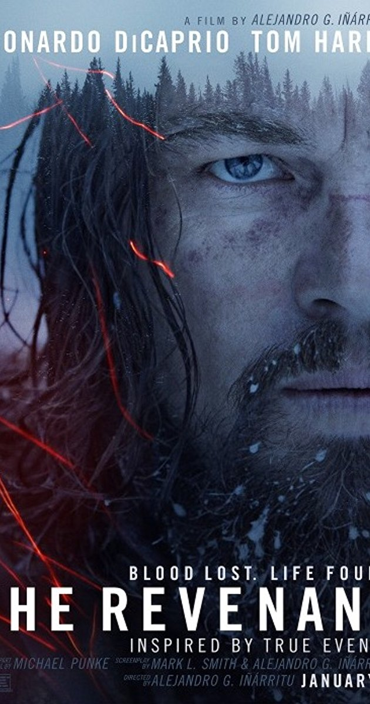
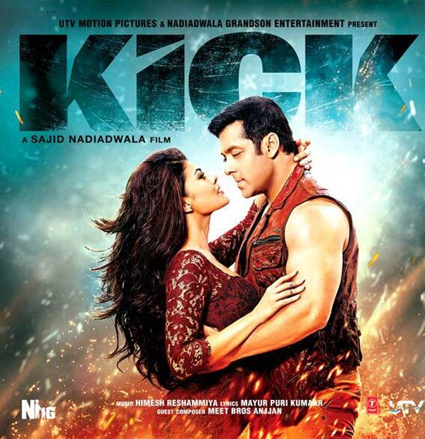
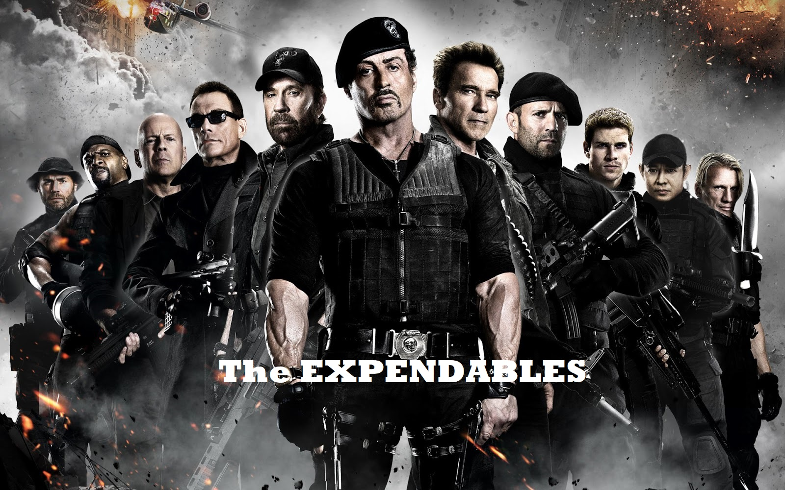
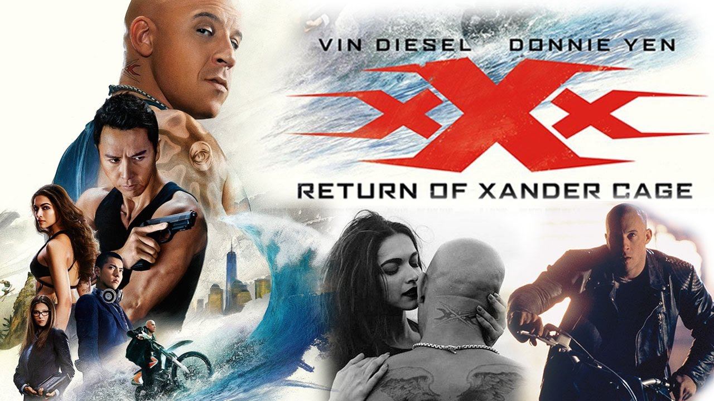

Movies

The Revenant is a 2015 American semi-biographical epic western film directed by Alejandro G. Iñárritu. The screenplay by Mark L. Smith and Iñárritu is based in part on Michael Punke's 2002 novel of the same name, describing frontiersman Hugh Glass's experiences in 1823. It stars Leonardo DiCaprio, Tom Hardy, Domhnall Gleeson and Will Poulter.
Development began in August 2001 when producer Akiva Goldsman purchased Punke's manuscript. Iñárritu signed on to direct in August 2011 and in April 2014, after several delays due to other projects, Iñárritu confirmed that he was beginning work on The Revenant and that DiCaprio would play the lead role. Principal photography began in October 2014. Location and crew concerns delayed the film from May to August 2015.
The film premiered at the TCL Chinese Theatre on December 16, 2015 and had a limited release on December 25, expanding on January 8, 2016. It received positive reviews from critics, with the performances, direction and cinematography receiving particular praise. The Revenant won three Golden Globe Awards, five BAFTA Awards and at the 88th Academy Awards, Iñárritu, DiCaprio and Emmanuel Lubezki won the awards for Best Director, Best Actor and Best Cinematography, respectively. DiCaprio also won the Golden Globe Award for Best Actor – Motion Picture Drama, Screen Actors Guild Award for Outstanding Performance by a Male Actor in a Leading Role, BAFTA Award for Best Actor in a Leading Role and Critics' Choice Movie Award for Best Actor.

Kick is a 2014 Indian action film produced and directed by Sajid Nadiadwala under his Nadiadwala Grandson Entertainment banner. It is an official remake of the 2009 Telugu movie Kick. The film features Salman Khan, Jacqueline Fernandez and Randeep Hooda in the lead roles and Nawazuddin Siddiqui , portraying the main antagonist of the film. The screenplay was adapted by Nadiadwala and Chetan Bhagat. The film released on 25 July 2014 in about 5,000 screens worldwide.
Devi is an intelligent, adventurous man who is always looking for a "kick" in his life. When Shaina meets Devi, she is trying to help her friend Vidhi elope with her lover who is Devi's friend. Devi gets them married in a temple, but also helps her mother follow them and reach the temple for "kick." Shaina meets Devi's father, Ratan Lal Singh, and his mother Rati Lal Singh. Devi and Shaina date and fall in love. On Shaina's suggestion,
Devi accepts a job in a chemical lab, but resigns in a few days suffering from the lack of "kick." Shaina scolds him and Devi breaks up with her and moves away.
Himanshu, a police officer, shares his experiences with a thief he hates, because he can't stop him. The robber, called "Devil," targets the rich people associated with Shiv Gajra, a corrupt businessman, and robs them. The robber is none other than Devi. When Himanshu is unsuccessful in catching Devil, Devi contacts Himanshu and refers to him as a partner and insults him by calling him a loser which is actually a clue that Devi gives Himanshu.

The Expendables is a 2010 American ensemble action film written by David Callaham and Sylvester Stallone, and directed by Stallone, who also starred in the lead role. The film co-stars Jason Statham, Jet Li, Dolph Lundgren, Randy Couture, Terry Crews, Steve Austin and Mickey Rourke. The film was released in the United States on August 13, 2010. It is the first installment in The Expendables film series. This was Dolph Lundgren's first theatrically released film since 1995's Johnny Mnemonic, and Steve Austin's last theatrical release film until 2013's Grown Ups 2.
The film is about a group of elite mercenaries tasked with a mission to overthrow a Latin American dictator whom they soon discover to be a mere puppet controlled by a ruthless ex-CIA agent. It pays tribute to the blockbuster action films of the late 1980s and early 1990s. It was distributed by Lionsgate.
The Expendables received mixed reviews, praising the action scenes, but criticizing the lack of story. However, it was commercially successful, opening at number one at the box office in the United States, the United Kingdom, China and India, and grossed a total of $274 million worldwide. A sequel, The Expendables 2, was released on August 17, 2012, and another sequel, The Expendables 3, was released on August 15, 2014.

xXx: Return of Xander Cage (released as xXx: Reactivated in some countries) is a 2017 American action film directed by D. J. Caruso and written by F. Scott Frazier. The film stars Vin Diesel, Donnie Yen, Deepika Padukone, Kris Wu, Ruby Rose, Tony Jaa, Nina Dobrev, Toni Collette, and Samuel L. Jackson. It is the third installment in the xXx franchise and a sequel to both xXx (2002) and xXx: State of the Union (2005).
Unlike the previous films, which were distributed by Columbia Pictures, the film was released by Paramount Pictures on January 20, 2017, in 2D, RealD 3D and IMAX 3D. This also marks the first film produced by Revolution Studios in ten years since 2007's The Water Horse: Legend of the Deep. The film received mixed reviews from critics and grossed over $346 million worldwide against a production budget of $85 million, making it the highest-grossing film of Revolution Studios and in the franchise.NSA Agent Augustus Gibbons attempts to recruit footballer Neymar Jr. for the xXx program when a satellite crashes in Brazil, apparently killing them both. Shortly afterwards, a team of four skilled individuals led by Xiang (Donnie Yen) infiltrate a highly guarded CIA office in New York City and retrieve "Pandora's Box", a device which is capable of controlling satellites to crash at specific locations as warheads. CIA Agent Jane Marke tracks down former xXx operative Xander Cage, who faked his death and has been living in self-imposed exile in the Dominican Republic, and convinces him to return to active service to retrieve the device.
Click
here
to see home page